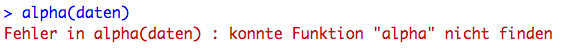
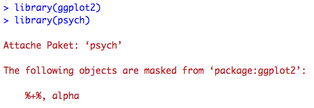
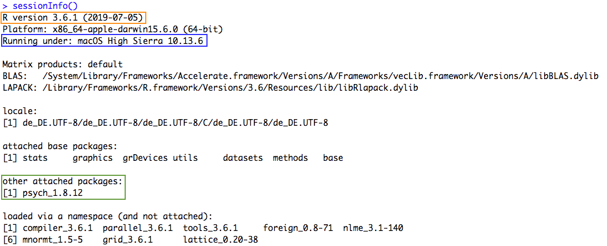
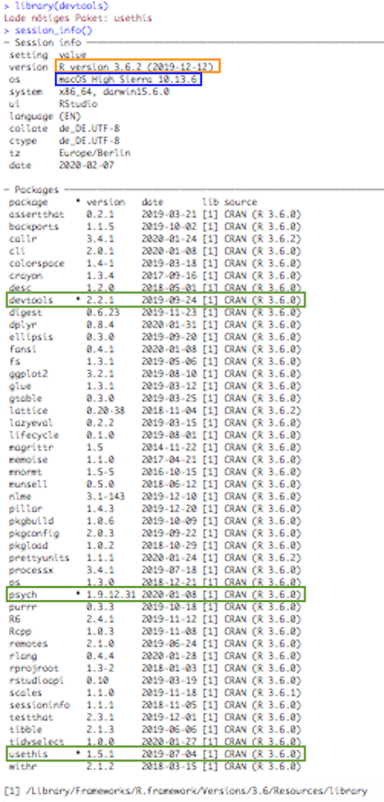
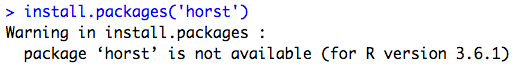

Chapter 4 Pakete
Ein Grund, weshalb R von so vielen BenutzerInnen verwendet wird, ist, dass es sich hierbei um eine Open Source Software handelt. R ist für alle kostenlos, frei verfügbar und der Quellcode ist öffentlich. Dies ermöglicht es WissenschaftlerInnen und EntwicklerInnen auf der ganzen Welt, ständig neue Funktionen in R zu implementieren und diese mit anderen NutzerInnen über „Pakete“ zu teilen. Wenn wir diese neu entwickelten Funktionen, die nicht ohnehin grundlegend in R vorhanden sind (z.B. über die stets eingeladenen Pakete base und graphics), für unsere Analysen verwenden wollen, müssen wir die Pakete, welche die entsprechenden Funktionen beinhalten, installieren und laden.
Hinweis: Pakete, die grundlegend in
Renthalten sind, nennt man auch Standard- oder Basispakete.
In diesem Abschnitt schauen wir uns am Beispiel des Pakets psych an, wie wir zusätzliche Pakete nutzen können. psych ist ein Paket, welches uns ermöglicht, in R Analysemethoden umzusetzen, die besonders häufig in psychologisch-empirischer Forschung eingesetzt werden (z.B. können wir mit der Funktion alpha() die interne Konsistenz von Items eines Tests mit verschiedenen Methoden schätzen).
Um mit einem zusätzlichen Paket arbeiten zu können, muss dieses eimalig in R installiert werden. In jedem Skript, in welchem wir Funktionen aus dem Paket verwenden, müssen wir das Paket dann laden. Eine Analogie, die wir verwenden können, um uns diesen Ablauf besser vorzustellen, wäre, dass Pakete wie Bücher in einer Bibliothek verstanden werden können. Die Bücher müssen nur einmal gekauft werden (Installation), aber wir müssen sie vor jeder Nutzung aus dem Regal holen und aufschlagen (Laden). Pakete sollten weiterhin bei Bedarf aktualisiert werden, da EntwicklerInnen ständig daran arbeiten und versuchen, sie zu verbessern.
Im Folgenden wollen wir also am Beispiel des psych-Pakets nachvollziehen, wie Pakete installiert, geladen und aktualisiert werden können. Dabei schauen wir uns jeweils die zwei grundlegenden Möglichkeiten an: Funktionen ausführen oder die grafische Benutzeroberfläche von RStudio nutzen. Für beide Möglichkeiten benötigen wir eine Internetverbindung zum Herunterladen der Pakete. Am Ende des Kapitels befinden sich noch wichtige Hinweise zur Replizierbarkeit von Skripten und Analysen.
4.1 Was ist eine grafische Benutzeroberfläche?
Die grafische Benutzeroberfläche, oder auch Benutzungsschnittstelle, wird häufig auch mit GUI (Graphical User Interface) abgekürzt. Durch diese können wir mit der Maus auf Symbole und andere Steuerelemente klicken anstatt Funktionen in der Konsole auszuführen. Die grafische Benutzeroberfläche in RStudio ist viel besser ausgebaut, weswegen wir diese auch nutzen wollen.
4.2 Was ist CRAN?
CRAN steht für The Comprehensive R Archive Network. Von hier laden wir R sowie alle annerkannten Pakete herunterladen können. Wenn wir diese Pakete installieren oder aktualisieren, greift R automatisch auf CRAN zu.
Hinweis: Wenn wir versuchen, eine Funktion auszuführen, für welche wir das entsprechende Paket noch nicht installiert und/oder geladen haben, erhalten wir eine Fehlermeldung. Wir bekommen beispielsweise folgende Fehlermeldung, wenn wir die Funktion
alpha()aus dem Paketpsychnutzen wollen.

4.3 Pakete Installieren
Zuerst einmal schauen wir uns an, wie wir diese zusätzlichen Pakete in R installieren können. Die meisten bekannten Pakete werden über CRAN zur Verfügung gestellt und können von dort heruntergeladen werden.
Zur Installation von Paketen schauen wir uns beide Herangehensweisen, das Nutzen von Funktionen sowie der grafischen Benutzeroberfläche, an.
Vorweg: Bei beiden Wegen wird uns nach erfolgreicher Installation folgender Output in der Konsole angezeigt:

4.3.1 Über die Funktion install.packages()
Wir können psych installieren, indem wir install.packages(“psych”, dependencies = TRUE) ausführen. Hierbei ist darauf zu achten, dass wir den Namen des Pakets in Anführungszeichen setzen müssen. Mit dependencies=TRUE geben wir an, dass noch nicht installierte Pakete, welche von dem Zielpaket benötigt oder empfohlen werden, ebenfalls installiert werden sollen.
Hinweis: Die Funktion
install.packages()ist Bestandteil des Standardpakets utils.
4.3.2 Über das Icon Install oder den Menüpunkt Install Packages…
Wir können das Paket auch installieren, indem wir im Packages-Tab auf das Icon Install …

… oder in der Menüleiste am oberen Bildschirmrand auf Tools –> Install Packages… klicken.

Nun öffnet sich ein neues Fenster, in welchem wir unter dem Reiter Packages (…) den Namen des Pakets eingeben können. Anschließen müssen wir noch auf das Icon Install klicken.

Mit dem Häkchen in dem Kästchen bei Install Dependencies werden von dem Zielpaket benötigte oder empfohlene bisher nicht installierte Pakete auch heruntergeladen.
4.4 Pakete Laden
Nachdem wir das benötigte Paket installiert haben, müssen wir es noch laden. Nur dann können wir die im Paket enthaltenen Funktionen nutzen. Hierzu schauen wir uns wieder die beiden Herangehensweisen, über eine Funktion oder die grafische Benutzeroberfläche, an.
Vorweg: Bei beiden Möglichkeiten erscheint nach erfolgreichem Laden des Pakets folgender Output in der Konsole:

4.4.1 Über die Funktion library()
Wir können das Paket psych laden, indem wir library(psych) ausführen. Hierbei ist es nicht wichtig, den Namen des Pakets in Anführungszeichen zu setzen. Wir können diese auch weglassen.
Hinweis: Die Funktion
library()ist Bestandteil des Standardpakets base.
Alternativ kann man auch die Syntax paket::funktion(), z.B. psych::alpha(), nutzen. Was dieser Weg für Vorteile hat, erfahren wir im Unterabschnitt Maskierung.
4.4.2 Über das Häkchen-Setzen in der System Library
Alternativ können wir im Packages-Tab ein Häkchen bei dem Paket setzen, welches wir laden wollen. Um das gewünschte Paket schneller zu finden, können wir das Suchfeld nutzen.

4.4.3 Maskierung: Wenn verschiedene Pakete gleich benannte Funktionen enthalten
Es kann vorkommen, dass Funktionen aus verschiedenen Paketen die gleiche Bezeichnung haben. Beispielsweise gibt es in psych und in ggplot2 eine Funktion mit dem Namen alpha(). Wenn wir ein Paket laden, und vorher ein anderes Paket geladen wurde, in dem eine gleichnamige Funktion vorkommt, bekommen wir folgende Meldung in der Konsole ausgegeben:

Die Funktion des zuletzt eingeladenen Pakets wird mit dem gemeinsamen Funktionsnamen (hier: alpha() aus dem Paket psych) aufgerufen. Die Funktion aus dem anderen Paket wird maskiert, d.h. wir können sie jetzt erstmal nicht mehr nutzen.
Nachfolgend schauen wir uns drei Möglichkeiten an, Probleme mit dem Maskieren von Funktionen handzuhaben: 1) deaktivieren und neu laden von Paketen, 2) eindeutige Referenzierung von Funktionen und 3) das Paket conflicted nutzen.
Wenn wir die Funktion aus dem anderen Paket (ggplot2) nutzen wollen, können wir das Paket erst deaktivieren und dann neu laden. Wir können Pakete deaktivieren, indem wir detach(“package:ggplot2”, unload = TRUE) nutzen oder indem wir das Häkchen neben dem Paket im Packages-Tab entfernen.
Wenn wir das Paket mit der gewünschten Funktion laden, erhalten wir folgende Meldung.

Es handelt sich um die gleiche Meldung wie oben, nur das nun das Paket ggplot2 als zweites Paket eingelesen wurde und entsprechend die Funktionen im Paket psych maskiert wurden.
Eine Alternative zu dem Laden und Deaktivieren von Paketen ist die exakte Referenzierung der Funktion auf das Paket mittels ::. Das schreiben wir zwischen das Paket und die Funktion z.B. psych::alpha() oder ggplot2::alpha(). So weiß R eindeutig, welche Funktion wir nutzen wollen.
Hinweis: Es kommt häufiger zu Problemen bei der Ausführung der Funktionen
filter(),select()undsummarise()aus dem Paket dplyr, wenn die Pakete stats (Basispaket;filter()), MASS (select()) oder plyr (summarise()) ebenfalls geladen sind. Die eindeutige Auswahl von Funktionen mittels::kann bestehende Probleme lösen. Mehr Informationen zur Problematik finden wir in diesem Forumseintrag.
Außerdem können wir das Paket conflicted nutzen. Wenn wir dieses zu Beginn laden, wird uns jedes Mal, wenn wir eine Funktion nutzen wollen, die nicht eindeutig einem geladenen Paket zugeordnet werden kann, eine detaillierte Fehlermeldung ausgegeben. So können wir Probleme durch die Nutzung falscher Funktionen und/oder Ratlosigkeit bzgl. missverständlicher Fehlermeldungen vermeiden. Wir haben außerdem die Möglichkeit, einmalig bzw. für das gesamte Skript eine von mehreren gleichnamigen Funktionen festzulegen. Mehr Informationen zum Paket und dessen Anwendung finden wir hier.
4.5 Pakete Aktualisieren
Pakete werden von Zeit zu Zeit aktualisiert. Wir sollten hin und wieder überprüfen, ob es Updates für unsere installierten Pakete gibt. Das können wir wieder wahlweise mit Funktionen oder der grafischen Benutzeroberfläche machen.
4.5.1 Über die Funktion update.packages()
Wir können update.packages() ausführen, und bekommen so für jedes Paket, für das eine aktuellere Version vorliegt, in der Konsole die Frage gestellt, ob wir dieses aktualisieren wollen. Mit Yes oder No bzw. deren Anfangsbuchstaben können wir antworten.
Hinweis: Die Funktion
update.packages()ist Bestandteil des Standardpakets utils.

Es kann vorkommen, dass für einige der Pakete, die wir aktualisieren wollen, noch nicht die Binärcodes der aktuellsten Versionen der Pakete für unser Betriebssystem auf CRAN bereit gestellt wurde.

Was sind Binär- und Quellcode?
Binärcode ist eine Sprache, die zur Verarbeitung digitaler Informationen, d.h. von Rechnern, genutzt wird (Synonym: Maschinencode). Es heißt binär weil es zwei mögliche Zeichen gibt: 0 und 1. Quellcode bezeichnet für Menschen lesbare Programmiersprachen. Quellcode wird in Binärcode übersetzt und kann dann von Rechnern ausgeführt werden.
Wir können die jüngsten Binärcodes für die Pakete herunterladen oder die Quellcodes der aktuellsten Versionen kompilieren. Allerdings müssen wir dafür spezielle Tools in R installiert haben, welche man unter Mac OS und einer älteren als R-Version 4.0.0 zusätzlich herunterladen muss (z.B. hier). Wir können hier auch pauschal nein antworten. Es ist ausreichend dafür ein n in die Konsole zu tippen. Nach einiger Zeit sollten wir erneut versuchen, die aktuellste Version herunterzuladen, da dann häufig auch die Binärcodes zur Verfügung stehen.
4.5.2 Über das Icon Update oder den Menüpunkt Check for Package Updates…
Dazu können wir im Packages-Tab auf das Icon Update …

… oder in der Menüleiste am oberen Bildschirmrand auf Tools –> Check for Package Updates… klicken.

Damit öffnet sich ein neues Fenster, in dem all unsere Pakete angezeigt werden, für die es Aktualisierungen gibt.

Wir sehen hier welche Version eines Pakets wir haben (Installed), welche neuere Version verfügbar ist (Available) und welche Änderungen in der neueren Version vorgenommen wurden (NEWS). Bei letzterem müssen wir das jeweilige Seiten-Symbol klicken und werden auf eine Website verwiesen, in der eine Übersicht der Änderungen zu finden ist.
Wenn wir alle Pakete aktualisieren wollen, wählen wir Select All. Dann müssen wir nur noch auf Install Updates klicken.
Wenn wir Pakete, die wir installieren wollen, derzeit geladen haben, öffnet sich ein Fenster, in dem werden wir gefragt, ob wir R neustarten möchten bevor die gewählten Pakete installiert werden sollen. Wir sollten hier Ja anklicken. Manchmal kann es vorkommen, dass uns dieses Fenster immer wieder angezeigt wird. Wenn das der Fall ist, sollten wir auf Nein klicken.

Manchmal werden die Updates nicht einfach installiert, sondern der Vorgang wird unterbrochen und wir bekommen eine Meldung in der Konsole angezeigt.

Wir werden auch hier darauf hingewiesen, dass für einige der Pakete, die wir aktualisieren wollen, noch nicht die Binärcodes der aktuellsten Versionen der Pakete für unser Betriebssystem auf CRAN bereit gestellt wurden.
Wir sollen uns nun entscheiden, ob wir die betroffenen Pakete mit den Quellcodes der aktuellsten Versionen kompilieren wollen. Dafür müssen wir aber gewisse Tools in R implementiert haben, welche man mit Mac OS zusätzlich herunterladen muss (z.B. hier) Besser ist es, hier pauschal nein anzuwählen. Dafür reicht es auch, ein n in die Konsole zu tippen. Wir haben so aber nicht die aktuellste Version der Pakete und sollten in nächster Zeit erneut versuchen, diese zu aktualisieren.
4.5.3 Entwicklerpakete runterladen
Das Paket devtools enthält verschiedene Funktion zum Installieren von Paketen von verschiedenen Quellen (engl.: repositories, z.B. CRAN).
Mit diesem können wir u.a. sogenannte Entwicklerpakete herunterladen. Das sind Pakete, die man nicht direkt von CRAN runterladen kann (z.B. weil die Dokumentation des Pakets und seiner Funktionen nicht den CRAN-Standards entspricht).
Solche Entwicklerpakete können häufig von GitHub runtergeladen werden. Zuerst müssen wir dafür das Paket devtools installieren. Dann müssen wir dieses laden und anschließend können wir das gewünschte Zielpaket herunterladen.
install.packages("devtools")
library(devtools)
# Beispiel: Paket horst
install_github("kthorstmann/horst") # EntwicklerIn / PaketMit devtools kann man auch ältere Versionen von Paketen runterladen. Für mehr Informationen dazu siehe Ältere Paket-Versionen installieren.
4.6 Wichtige Hinweise zur Replizierbarkeit
4.6.1 Replizierbarkeit von R-Skripten
Wir haben beide Möglichkeiten, die Nutzung von Funktionen und die der grafischen Benutzeroberfläche vorgestellt, aber die Verwendung von Funktionen ist mit Hinblick auf die Replizierbarkeit von Skripten zu bevorzugen. Wenn man die grafische Benutzeroberfläche nutzt, findet man im Skript keine Hinweise darüber, welche Pakete genutzt wurden, d.h. library(paket) erscheint nur in der Konsole und eben nicht im R-Skript.
4.6.2 Replizierbarkeit von Analysen
Es ist sinnvoll, bei Analysen zu vermerken, mit welcher Version eines Pakets wir diese durchgeführt haben. Wenn sich die Funktionen eines Pakets durch Updates ändern, kann das auch die Ergebnisse unserer Analysen beeinflussen. Gleiches gilt auch für zu der Zeit genutzte Versionen von unserem Betriebssystem und von R.
Mit der Funktion sessionInfo() aus dem Standardpaket utils bekommen wir viele wichtige Informationen auf einen Schlag:
R-Version- Betriebssystem-Version
- geladene Pakete mit Angaben zur Version

Hinweis: Hiermit werden nur Pakete gelistet, die mit
library()oder mit Hilfe des GUIs geladen wurden. Wenn wir die eindeutige Zuweisung von Funktionen zu Paketen aus dem Abschnitt Maskierung nutzen z.B. psych::alpha(), werden unsere genutzten Pakete nicht gelistet. In diesem Fall müssten wir die Informationen zu den Versionen der Pakete selbst in Erfahrung bringen.
Für noch detailliertere Informationen zu unseren geladenen Paketen können wir session_info() aus dem Paket devtools nutzen.
Hier sehen wir z.B. bei source wo wir die Paket heruntergeladen haben (z.B. CRAN) und bei version mit welcher R-Version wir sie erstellt haben (z.B. R 3.6.0).

4.7 Weitere Hilfen
4.7.1 Probleme mit Paketen und Funktionen
Bei Problemen mit dem Installieren bzw. Updaten oder Laden von Paketen lohnt es sich, in unserem FAQ-Eintrag nachzuschauen.
Wenn wir bestimmte Funktionen nicht ausführen können, obwohl wir das notwendige Paket geladen haben, kann das auf Maskierung von gleichnamigen Funktionen aus verschiedenen geladenen Paketen zurückzuführen sein.
4.7.2 Ältere Paket-Versionen installieren
Manchmal möchten wir ältere Versionen von Paketen nutzen. Das kann z.B. der Fall sein, wenn wir eine Analyse, die mit einer älteren Version eines Pakets durchgeführt wurde, replizieren möchten. Hier finden wir eine Anleitung, wie wir dafür devtools() oder URLs nutzen können.
4.8 FAQ
Manchmal kann es vorkommen, dass wir bestimmte Pakete nicht laden oder gar nicht erst installieren können. Dafür kann es vielfältige Ursachen geben. Im Folgenden schauen wir uns an, wie man das Problem (mit großer Wahrscheinlichkeit) lösen kann.
Wir führen die folgenden drei Möglichkeiten der Reihe nach durch und überprüfen nach jeder Möglichkeit, ob wir das Paket schon nutzen können.
Wir schauen uns das exemplarisch für das Paket car an. Du änderst nur noch den Namen des Pakets bzw. der Pakete. Manchmal werden noch weitere Pakete - sog. dependencies - geladen. Diese solltest du in die folgenden Lösungswege auch mit einbeziehen.
- Die Pakete via Befehl deinstallieren und neu installieren
remove.packages('car') bzw. remove.packages(c('car', 'survey'))
install.packages('car', dependencies=TRUE)
- Die neuste
R-Version vonRund/oder RStudio (hierbei die kostenlose Variante) auf dem Computer installieren und dann versuchen, das Paket neu zu installieren bzw. Schritt 1 durchzuführen.
Achte dabei auf die Kompatibilität mit deiner Hardware und Software. Unter Umständen kannst du vielleicht nicht die neueste Version installieren, aber eine neuere als deine aktuelle Version. Ältere Versionen von R finden wir auch unter obigem Link. Ältere Versionen von RStudio finden wir hier.
- Die Pakete deinstallieren und manuell neu installieren
remove.packages('car') bzw. remove.packages(c('car', 'survey'))
Das Paket bzw. die Pakete von CRAN als zip-Datei/en runterladen, dann öffnen (entpacken), den R Library Ordner lokalisieren (in dem werden alle R-internen Dateien gespeichert) und den/die Paket-Ordner dorthin verschieben.
4.8.1 Entwicklerpakete
Es gibt auch sog. Entwicklerpakete, die man nicht direkt von CRAN runterladen kann. Wie man diese installieren kann, schauen wir uns am Beispiel des Pakets horst an.
Mit den im Paket horst enthaltenen Funktionen können wir u.a. den Modus einer Variablen oder Omega’s W berechnen. Hier finden wir eine Übersicht der enthaltenen Funktionen.
Wenn man versucht Entwicklerpakete mit install.packages() herunterzuladen, bekommt man eine Fehlermeldung ausgegeben:

Entwicklerpakete erhält man zumeist direkt von den Entwicklern (z.B. als Zusatzmaterial in wissenschaftlichen Publikationen oder zum Download von persönlichen Webseiten). Häufig können Entwicklerpakete auch von GitHub runtergeladen werden. Dazu müssen wir zunächst das Paket devtools, welches wir zum Herunterladen benötigen, installieren. Dann müssen wir dieses laden und anschließend können wir das gewünschte Zielpaket installieren.
install.packages("devtools")
library(devtools)
install_github("kthorstmann/horst") # EntwicklerIn / PaketUm eine möglichst exakte Replikation der Funktionen zu gewährleisten gibt es im folgenden relevante Angaben zum System (R-Version, Betriebssystem, geladene Pakete mit Angaben zur Version), mit welchem diese Seite erstellt wurde.
sessionInfo()## R version 4.2.2 (2022-10-31 ucrt)
## Platform: x86_64-w64-mingw32/x64 (64-bit)
## Running under: Windows 10 x64 (build 22621)
##
## Matrix products: default
##
## locale:
## [1] LC_COLLATE=English_Germany.utf8 LC_CTYPE=English_Germany.utf8
## [3] LC_MONETARY=English_Germany.utf8 LC_NUMERIC=C
## [5] LC_TIME=English_Germany.utf8
##
## attached base packages:
## [1] stats graphics grDevices utils datasets methods base
##
## other attached packages:
## [1] devtools_2.4.5 usethis_2.1.6 kableExtra_1.3.4 dplyr_1.0.10
## [5] psych_2.2.9
##
## loaded via a namespace (and not attached):
## [1] Rcpp_1.0.9 svglite_2.1.0 lattice_0.20-45 prettyunits_1.1.1
## [5] ps_1.7.2 assertthat_0.2.1 digest_0.6.30 utf8_1.2.2
## [9] mime_0.12 R6_2.5.1 evaluate_0.18 httr_1.4.4
## [13] highr_0.9 pillar_1.8.1 rlang_1.0.6 rstudioapi_0.14
## [17] miniUI_0.1.1.1 urlchecker_1.0.1 callr_3.7.3 jquerylib_0.1.4
## [21] rmarkdown_2.18 webshot_0.5.4 stringr_1.5.0 htmlwidgets_1.5.4
## [25] munsell_0.5.0 shiny_1.7.3 compiler_4.2.2 httpuv_1.6.6
## [29] xfun_0.35 pkgconfig_2.0.3 systemfonts_1.0.4 mnormt_2.1.1
## [33] pkgbuild_1.4.0 htmltools_0.5.4 tidyselect_1.2.0 tibble_3.1.8
## [37] bookdown_0.30 fansi_1.0.3 viridisLite_0.4.1 crayon_1.5.2
## [41] later_1.3.0 grid_4.2.2 nlme_3.1-160 jsonlite_1.8.4
## [45] xtable_1.8-4 lifecycle_1.0.3 DBI_1.1.3 magrittr_2.0.3
## [49] scales_1.2.1 cli_3.4.1 stringi_1.7.8 cachem_1.0.6
## [53] remotes_2.4.2 fs_1.5.2 promises_1.2.0.1 xml2_1.3.3
## [57] bslib_0.4.1 ellipsis_0.3.2 generics_0.1.3 vctrs_0.5.1
## [61] tools_4.2.2 glue_1.6.2 purrr_0.3.5 pkgload_1.3.2
## [65] processx_3.8.0 parallel_4.2.2 fastmap_1.1.0 yaml_2.3.6
## [69] colorspace_2.0-3 sessioninfo_1.2.2 rvest_1.0.3 memoise_2.0.1
## [73] knitr_1.41 profvis_0.3.7 sass_0.4.4Für Informationen zur Interpretation dieses Outputs schaut auch den Abschnitt Replizierbarkeit von Analysen des Kapitels zu Paketen an.